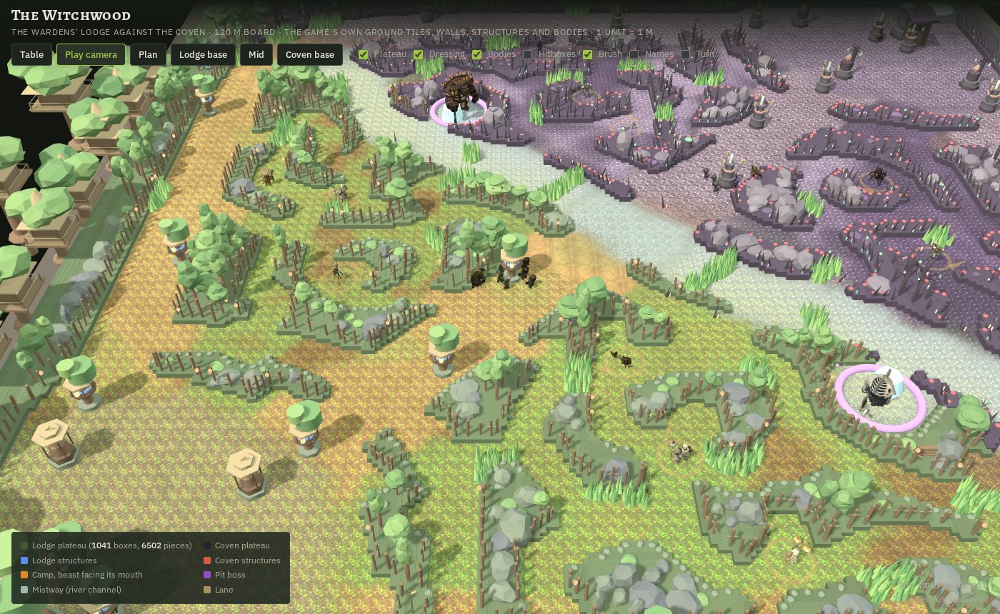
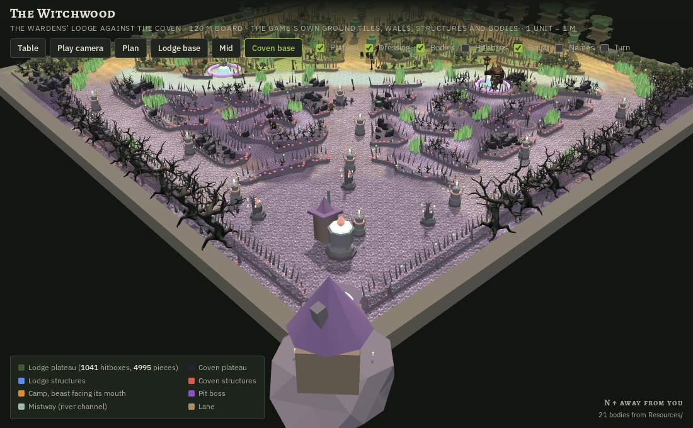
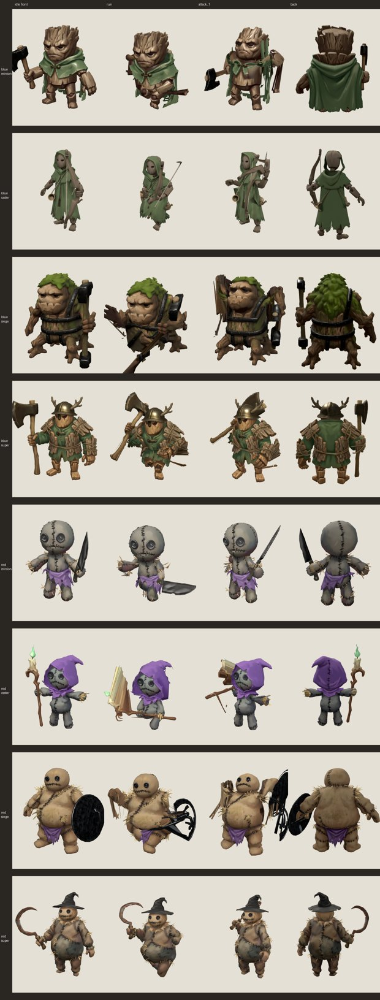
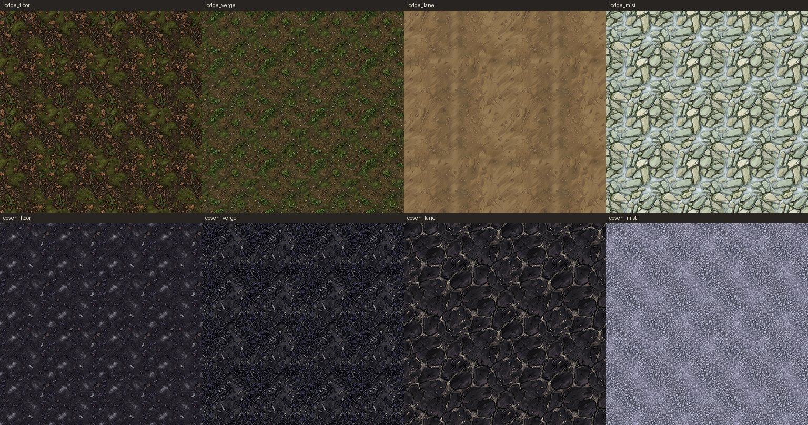
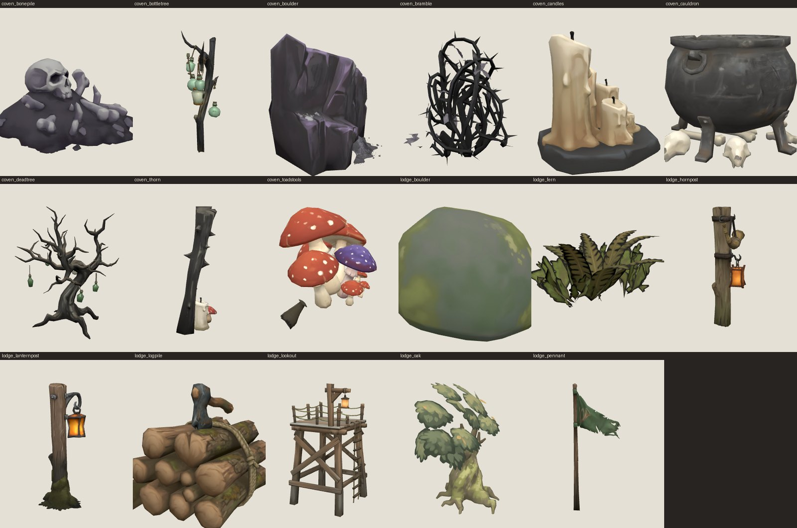
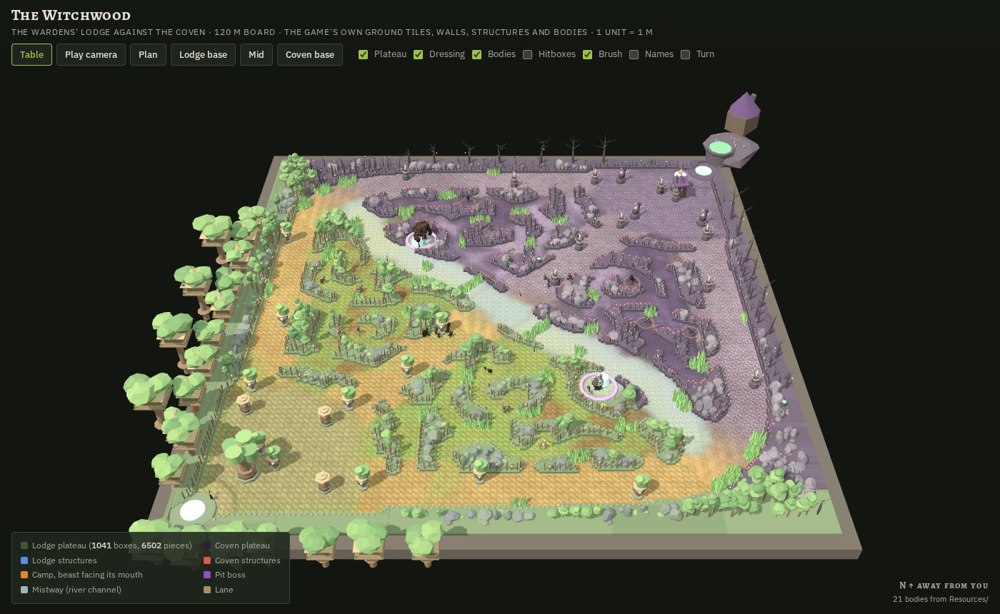

5v5 · the big map
The Witchwood
The Wardens' Lodge holds the south-west corner and the Coven the north-east. Three lanes run between the two bases, a full jungle fills the wood on either side of them, and one dry channel of mist runs across the middle from a pit at each end. It is a hundred and twenty metres on a side, and everything on the plan below is drawn from the game's own map file: every wall box is a hitbox as the game has it.
- Wall on the Lodge's half: mossy loam plateau over oaks, ferns and boulders
- Wall on the Coven's half: black soil under dead trees, thorns and toadstools
- The Lodge's fountain, great oak, hearth-shrines and watch-platforms
- The Coven's fountain, cauldron, bottle-trees and cauldron towers
- Jungle camp, with a tick for the way its beast faces
- Pit: the Bridge Warden in the north-west, the Marrow Kraken in the south-east
- The Mistway, the river's dry channel
- Altars, one on each bank
- Brush, which hides whoever stands in it
- Lane
- The shape
- Bases in opposite corners, top lane along the west and north edges, bot lane along the south and east, mid straight across the diagonal. The Coven's half is the Lodge's turned through a half circle, so the walk to any objective is the same from either fountain.
- The seam
- The board changes hands on the other diagonal. South-west of it the ground is loam and moss and the walls carry oaks; north-east of it the soil is black under a violet cast and the walls carry dead trees. The Mistway runs along that seam.
- Hover the plan
- Every structure, camp and pit names itself on hover. The plan is the same data the game loads, so what you see here is what the pathing sees.
Two districts
Each side of the board is a place, and each place is built the same way: a ground of its own, walls dressed with its own props, its own minions, and structures in its own architecture.
Blue · south-west
The Wardens' Lodge
Oak, moss, rope, thatch and bronze. Treehouses stand on great oaks past the corner of the board with rope bridges between them. The towers are watch-platforms built round living oaks with a thatch roof, a bronze horn and an amber paper lantern. An inhibitor is a hearth-shrine under four posts. The nexus is the great oak itself with a lodge-hall in its crown.
Underfoot: a forest floor of loam and leaf litter gone green with moss, a bark-chip shoulder, a trodden earth road, and pale river stones where the Mistway runs. On the walls: oaks, ferns, mossy slate boulders, log piles, horn posts, rope-railed lookouts and green pennants.
Red · north-east
The Coven
Black bark, violet, iron, tallow and witch-fire. A crooked cottage sits on its rock over a great cauldron past the corner of the board. The towers are three cauldrons stacked with broomsticks leaned against them and a green candle burning on top. An inhibitor is a bottle-tree, a dead branch hung with glowing glass. The nexus is a cauldron of witch-fire under the cottage.
Underfoot: black soil under a violet cast with toadstool dust in the hollows, a shoulder of dead leaves and bone chips, a cracked black-earth road, and grey pebbles under the mist. On the walls: dead trees hung with bottles and candles, black boulders, toadstool rings, brambles, cauldrons, candle clusters, thorn stakes and bone piles.


Lanes and structures
Three towers a side per lane, an inhibitor behind each lane, two towers in front of the nexus, and the nexus itself. Twenty-two structures a side, and a strict order to taking them.
- The towers
- Each lane has a front tower out near the middle of the board, an outer tower, and an inner tower at the base's edge. They must fall in that order: a tower is shielded while the one in front of it stands. Their fire is the watchfire, and its threat ring is drawn on the ground.
- The inhibitors
- One behind each lane's inner tower, shielded until that tower falls. An inhibitor down sends the other side's foremen down that lane. Inhibitors come back after a time, so a base that has lost one can close the door again.
- The nexus towers
- Two of them stand in front of the nexus. Either can be hit once any one inhibitor is down.
- The nexus
- The Lodge's great oak, the Coven's cauldron. It cannot be hit while all three inhibitors stand, whatever has happened to its towers, and once an inhibitor is down it still waits behind both nexus towers. Break it and the match is over.
- The base court
- One paved plate reaches out from each fountain past the inner towers to the ring wall, so a base reads as one plaza. The fountain heals and sells; the shopkeeper stands in the Lodge's amber light or the Coven's green.
The Mistway and the pits
No water crosses this board. The river's channel is a sunken road of pale stone under a cold haze, running from one pit to the other and out to the top and bot lanes. The Lodge lines its bank with lantern posts, the Coven with thorn stakes and candles.
| Pit | Where | Boss | Wakes | Returns | Worth | Gives |
|---|---|---|---|---|---|---|
| The Bridge Warden's Reach | North-west end of the Mistway, off the top side | The Bridge Warden | 2:00 | 4:00 after it falls | 200 gold, 400 experience | The Warden's Mantle, for 90 seconds |
| The Marrow Kraken's Reach | South-east end of the Mistway, off the bot side | The Marrow Kraken | 7:00 | 5:00 after it falls | 500 gold, 800 experience | The Wrath of the Deep, for 150 seconds |
- The altars
- The Altar of Fury and the Altar of Swiftness stand on opposite banks of the channel, each a dry walk for one side and a crossing for the other. Each holds its blessing for 75 seconds.
- The fords
- The Mistway crosses all three lanes. The crossings are the only stretches of channel with no posts on their banks; everywhere else, the bank is wall.
The jungle
Twelve camps, six a side, each side's mirror of the other. A camp's large beast leads two smalls, except the shrines, whose sentinel stands alone. Every beast faces its camp's mouth, the way in.
| Camp | Half | Beast | With | Worth | Returns |
|---|---|---|---|---|---|
| The Wisp Landing | Lodge, top side | Lantern Mother | Two Lantern Wisps | 90 + 25 + 25 gold | 75 s |
| The Lantern Shrine | Lodge, top side | Paper Guardian | Stands alone | 150 gold | 90 s |
| The Strider Stilts | Lodge, top side | Stilt Strider | Stands alone | 95 gold | 75 s |
| The Silk Loft | Lodge, bot side | Silk Matron | Two Silk Moths | 90 + 25 + 25 gold | 75 s |
| The Lantern Shrine | Lodge, bot side | Paper Guardian | Stands alone | 150 gold | 90 s |
| The Bell Eaves | Lodge, bot side | Bell Cricket Lord | Two Bell Crickets | 85 + 22 + 22 gold | 70 s |
| The Ash Hollow | Coven, top side | Ash Wraith Elder | Two Ash Wraiths | 95 + 25 + 25 gold | 75 s |
| The Marrow Shrine | Coven, top side | Skull Golem | Stands alone | 150 gold | 90 s |
| The Rib Cage | Coven, top side | Rib Crawler Brood-Mother | Two Rib Crawlers | 85 + 22 + 22 gold | 70 s |
| The Hound Ossuary | Coven, bot side | Marrow Alpha | Two Marrow Hounds | 80 + 25 + 25 gold | 60 s |
| The Marrow Shrine | Coven, bot side | Skull Golem | Stands alone | 150 gold | 90 s |
| The Beetle Crown | Coven, bot side | Skull Beetle King | Two Skull Beetles | 85 + 22 + 22 gold | 70 s |
- The brush
- A hundred and seventy-one patches of tall grass. Stand in one and nobody outside it sees you unless they stand in it too; it hides the way brush does in the games this one grew from.
- The walls
- The jungle's walls are a thousand and forty-one boxes the pathing knows exactly. The plateau drawn over them follows their outline with its corners rounded a touch, and what stands on it, the trees, boulders and works, stands only where there is a box underneath.
Minions, a wave a side
Each side marches its own. The Lodge sends carved oak puppets in green hoods; the Coven sends stitched rag poppets in violet. The same four kinds walk each lane: three porters up front, three slingers behind, a hauler every third wave, and foremen once an inhibitor is down.

- Porter
- The melee body of the wave. Twelve damage a swing, three to a wave.
- Slinger
- The ranged back line. Eighteen a shot, three to a wave.
- Hauler
- The siege engine, forty a shot with the reach to hit a tower from outside its ring. One every third wave. It wears the big body, not the caster's, because an engine of war is armour before it is artillery.
- Foreman
- Sixty a swing and a head taller than everyone. Arrives down a lane whose inhibitor is down, and stops when it is rebuilt.
Ground and props
The Witchwood is painted, not tinted. Eight ground tiles, one a district a layer, and seventeen props, a set a district, were each painted from a written description and built from the painting, then stood on the board where the game's own rules put them.



The other boards
The Witchwood started as a copy of the Wide Wood, which stays in the game as an archived flavour of the same board. The Hushwood is the 3v3, and the Toll Road is where a new champion gets tried.